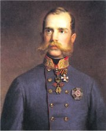

Obsah
Havlíček a Němcová
Májovci
Ruchovci
Lumírovci

Průběh revoluce v Praze

Císař František Josef I.
|
ČESKÁ LITERATURA PO ROCE 1848
Rok 1848 je všeobecně považován za konec národního obrození. Buditelské tendence v umění sice stále přetrvávaly, ale strach o další existenci českého národa byl neopodstatněný. Nově zřízený říšský sněm začal připravovat demokratickou ústavu, do které vkládali velké naděje nejen Češi. V této neklidné revoluční době byla zrušena robota i cenzura. Začal vycházet svobodný tisk. V Praze proběhl Slovanský sjezd, který požadoval federalizaci Rakouska a zrovnoprávnění všech národností. Brzy po tomto uvolnění ale přišel zásadní obrat. Povstání pražských studentů, které vedl Josef Václav Frič, potlačila armáda. Zasedání sněmu bylo z neklidné Vídně přesunuto do Kroměříže a roku 1849 ho nový císař František Josef I. rozpustil. Odhalení tzv. májového spiknutí vedlo k uvěznění řady demokratických politiků. V roce 1851 byla definitivně zrušena ústava.
Revoluční události vedly k pádu nenáviděného Metternicha, novým symbolem útlaku se stal ministr Alexandr Bach (1848-1859). Byla obnovena cenzura, prakticky ustal spolkový život a oficiální instituce se dostaly pod policejní kontrolu. Konstituční uspořádání bylo obnoveno až v roce 1861. Naprosté zklamání znamenalo pro Čechy rakousko-uherské vyrovnání (1867). Svůj nesouhlas s tím, že federalizace Rakouska pominula Čechy, demonstrovali vlastenci poutí do Ruska a pořádáním táborů lidu. Poslanci vyhlásili program pasivní politiky (1873-1879) a přestali se účastnit jednání říšské rady i zemského sněmu. Názorové spory vedly ke vzniku dvou politických proudů tradičně označovaných jako staročeši a mladočeši.
|
Historie
Nový císař František Josef I. (1848-1916) potlačil povstání ve Vídni, Praze i dalších oblastech Rakouska. Obnovil v zemi absolutismus (1851-1859), kterému se říká bachovský podle nenáviděného ministra Alexandra Bacha. Po ministrově pádu byla přijata ústava a Rakousko se stalo demokratickým státem uspořádaným na základě konstituční monarchie (1861). Po prohrané bitvě s Pruskem u Hradce Králové (1866) ztratilo Rakousko vedoucí postavení v německém spolku. Nutnost reforem vyústila v přijetí prosincové ústavy a federalizaci státu (1867). Nové Rakousko-Uhersko respektovalo pouze autonomii Maďarů. Slovanské národy přišly zkrátka. V Čechách začaly sílit protirakouské postoje a v uherské části došlo k silné maďarizaci, která postihla Slováky.
|
Spolkový život

Tyrš (nejvýše) a členové Sokola předvádějí různé cviky na živém obraze.
|
Spolkový život
Konstituce z roku 1861 a zvláště prosincová ústava (1867) zavedla základní občanská práva jako je svoboda slova, vyznání a spolčování. Kromě politických stran, které ale vyhlásily pasivní politiku, začala vznikat řada vlasteneckých i uměleckých spolků. Už v roce 1862 založil estetik Miroslav Tyrš (1832-1884) tělovýchovný spolek Sokol. Dále vznikl pěvecký spolek Hlahol, spisovatele podporoval Svatobor a výtvarníci se sdružili v Umělecké besedě. Spolkový život byl částečně náhražkou za neuskutečněný program česko-rakouského vyrovnání. Díky podpoře Vojtěcha Náprstka (1826-1894), který dlouho pobýval v Americe, se začalo formovat ženské hnutí. Vůdčí roli v něm převzaly spisovatelky Karolína Světlá, Sofie Podlipská a Eliška Krásnohorská. Těžiště jejich činnosti spočívalo ve vzdělávání dívek, zavádění výdobytků moderní techniky do domácností (šicí stroj) a podpoře ekonomického osamostatnění žen.
|
Co víš o Tyršovi?
Chodíš do Sokola? Existuje ve vašem městě Sokol? Jaká byla historie této organizace?
Navštěvuješ nějaký spolek?
Jsou tvoji rodiče členy nějakého spolku? (Dnes jim říkáme spíše občanská sdružení, komory nebo asociace.) Proč?
Co víš o Náprstkovi? Kde leží jeho muzeum? Co v něm najdeš?
|
Literatura

Max Švabinský: České jaro (Čech, Neruda, Vrchlický, Němcová, Zeyer)
|
Literatura
Ve druhé polovině 19. století se v tvorbě českých spisovatelů projevovaly dvě hlavní umělecké tendence, které můžeme označit jako realismus a idealismus. V jednotlivých dílech nacházíme často oba směry vedle sebe. K realismu měla blízko díla satirická (Havlíčkovy básně). Někteří spisovatelé se snažili zachytit typické postavy (Nerudovy Povídky malostranské). Děj knih umísťovali do prostředí, které důvěrně znali (ještědské prózy Karolíny Světlé). Zobrazovali společenské problémy – těžký život na venkově i ve městech (Hálkovy povídky) nebo problematiku sociální (některé Arbesovy prózy). Spisovatelé ale zároveň skutečnost idealizovali. Popisovali idylický život na venkově (Babička Boženy Němcové). Opěvovali ideální lásku (Vrchlický) a přírodu (Hálkova lyrika). Utíkali se ke slavné národní historii (Zeyerovy eposy) nebo do světa fantazie (Zeyerovy prózy) a záhad (Arbesova romaneta).
Vedle kratších úvarů jako jsou povídky a epigramy byly oblíbené rozsáhlé romány a veršované eposy. Rozvíjí se samostatná tvorba pro děti (Sládek) a mládež (Krásnohorská). Literatura nadále sloužila také jako náhražka politiky. Umělci se museli vyjadřovat v jinotajích a využívali alegorii (Čechova politická lyrika).
Podobně smýšlející spisovatelé se sdružovali kolem almanachů (Máj, Ruch) a generačních časopisů (Lumír, Květy, Osvěta).
|
Literární generace
V polovině 19. stol. vstoupili do literatury Karel Havlíček Borovský a Božena Němcová. V roce 1858 společně vystoupili májovci (Neruda, Hálek, Světlá...), roku 1868 ruchovci (Čech, Krásnohorská, Sládek...) a na začátku 70. let lumírovci (Vrchlický, Zeyer...).
Co je almanach?
Vysvětli význam slov ideál, idea, idealismus, idealista a ideální.
|
Překladatelství
|
Překladatelství
Snaha zprostředkovat českým čtenářům díla významných spisovatelů a vyrovnat se světové literatuře vedla k rozvoji překladatelství. Věnovali se mu přední umělci. Karel Havlíček Borovský překládal Gogola, Eliška Krásnohorská Puškina, Byrona a Mickiewicze a Josef Václav Sládek Shakespeara a Longfellowa. Nejpilnějším překladatelem byl Jaroslav Vrchlický. Ovládal francouzštinu, italštinu, němčinu i angličtinu a do češtiny převedl desítky knih. Překlady byly často velmi volné. Například Julius Zeyer spojoval různé náměty z období středověku (Karolinská epopeja) nebo oblasti Orientu.
|
Teorii překladu se věnoval český literární vědec Jiří Levý (1926-1967). Pokus se o něm něco zjistit.
Se kterými problémy se musí vypořádat překladatel?
Zkus přeložit krátkou báseň nebo povídku do češtiny.
Srovnej výsledek s prací profesionálního překladatele.
|
Národní divadlo
Požár Národního divadla, kolorovaná fotografie
|
Národní divadlo
Národní divadlo nebylo běžnou stavbou, ale chloubou českých vlastenců a symbolem národního uvědomění. V Praze dlouho chyběla reprezentativní budova, kde by se mohly uvádět české hry. Proto vznikl Sbor pro zřízení Národního divadla, který zakoupil parcelu a začal pořádat veřejnou sbírku na stavbu budovy. Nejprve vzniklo Prozatimní divadlo (1862). Během velkolepých slavností byly roku 1868 položeny základní kameny Národního divadla. Tyto kvádry pocházely z památných míst (Říp, Vyšehrad, Radhošť, Blaník, Vítkov) a dorazily do Prahy za doprovodu obrovského počtu lidí. Slavnosti se nakonec účastnilo více než 200 000 Čechů a stala se manifestací jednoty národa. Samotná stavba probíhala kvůli nedostatku peněz značně pomalu. Národní divadlo bylo slavnostně otevřeno uvedením Smetanovy opery Libuše až v roce 1881, ale dva měsíce na to vyhořelo. Oprava trvala do roku 1883. Vznikla velkolepá novorenesanční stavba s nádhernou výzdobou, na které se podíleli nejlepší umělci. Nápis Národ sobě nad jevištěm připomíná, že se na divadlo složili čeští vlastenci, to však není úplně pravda, protože na stavbu přispěl také císař a financovaly ji rakouské banky.
|

Jako reakci na stavbu Národního divadla si pražští Němci vybudovali vlastní neméně reprezentativní divadlo. Dnes nese název Státní opera.
Jak vypadalo Prozatimní divadlo? Zkus o něm zjistit co nejvíce zajímavostí.
|
Výtvarné umění
Mařák: Radhošť
|
Malířství, sochařství, architektura
Na výzdobě „zlaté kapličky“ se podíleli umělci z tzv. generace Národního divadla. Neorenesanční budovu projektovali Josef Zítek (1832-1909) a Josef Schulz (1840-1917), architekti Národního muzea a Rudolfina. František Ženíšek (1849-1916) vymaloval strop nad hledištěm. Jeho opona shořela, novou vytvořil Vojtěch Hynais (1854-1925). Mikoláš Aleš (1852-1913) namaloval cyklus lunet Vlast, Václav Brožík (1851-1901) přispěl výjevy z české historie a Julius Mařák (1832-1899) pohledy na památná místa Čech. Sochy trig vytvořil Bohuslav Schnirch (1845-1901). Josef Václav Myslbek (1848-1922) je autorem sousoší sv. Václava na stejnojmenném náměstí v Praze a řady dalších pomníků.
Hynais: opona Národního divadla
|

Aleš: Žalov
Schnirch: Triga (model)
|
Internetové stránky
Generace Národního divadla
Národní divadlo, Praha
Státní opera, Praha
Rudolfinum, Praha
Národní muzeum, Praha
Exkurze
Národní divadlo, Praha
Státní opera, Praha
Národní muzeum, Praha
Rudolfinum, Praha
Rudolfinum, Praha

Brožík: Mistr Jan Hus na koncilu kostnickém
|
Doporučená četba
Černý, Kolárová: Sto let Národního divadla, Albatros, Praha 1983
Česká literatura druhé poloviny 19. století, Karlova univerzita, Praha 1959
Čítanka českého myšlení o literatuře, Československý spisovatel, Praha 1976
Dějiny českého divadla III, Academia, Praha 1977
Efmertová, Marcela: České země v letech 1848-1918, Libri, Praha 1998
Fischer, Otokar: Činohra Národního divadla do roku 1900, Československý spisovatel, Praha 1983
Hilmera, Jiří: Česká divadelní architektura, Divadelní ústav, Praha 1999
Idyla a idyličnost v kultuře 19. století, Archiv města Plzně, Plzeň 1999
Janáčková, Jaroslava: Česká literatura 19. století, Od Máchy k Březinovi, Scientia, Praha 1994
Janáčková, J.: Stoletou alejí, Praha 1985
Konečná, Hana a kol.: Čtení o Národním divadle, Odeon, Praha 1984
Matějček, Antonín: Národní divadlo a jeho výtvarníci, SNKLHU, Praha 1954
Národní divadlo, Panorama, Praha 1980
Národní divadlo a jeho předchůdci, Academia, Praha 1988
Neudorflová, Marie: České ženy v 19. století, Janua, Praha 1999
Putna, Martin C.: Česká katolická literatura 1848-1918, Torst, Praha 1998
Strejček, F.: České školy básnické 19. věku, Praha 1921
Šnejdar, Josef: Národní divadlo, Olympia, Praha 1987
Urban, Otto: Česká společnost 1848-1918, Svoboda, Praha 1982
Zapadlo slunce za dnem, který nebyl, Petrov, Brno 2000
|
Vypracuj písemný referát o některé z uvedených knih.
Myslbek: Pomník knížete Václava
|
|